---------------------
Welcome to dendextend version 1.16.0
Type citation('dendextend') for how to cite the package.
Type browseVignettes(package = 'dendextend') for the package vignette.
The github page is: https://github.com/talgalili/dendextend/
Suggestions and bug-reports can be submitted at: https://github.com/talgalili/dendextend/issues
You may ask questions at stackoverflow, use the r and dendextend tags:
https://stackoverflow.com/questions/tagged/dendextend
To suppress this message use: suppressPackageStartupMessages(library(dendextend))
---------------------
Attaching package: 'dendextend'
The following object is masked from 'package:stats':
cutree
library(sf)
Linking to GEOS 3.10.2, GDAL 3.4.2, PROJ 8.2.1; sf_use_s2() is TRUE
library(fpc)library(paletteer)library(leaflet)
Load data
load("data/datAnnotCleaned.Rda")
Get roost classifications
roosts <- vultureUtils::get_roosts_df(df = datAnnotCleaned, id ="trackId")simplifiedRoosts <- roosts %>% dplyr::select(trackId, location_long, location_lat, roost_date)# double-check that we just have one roost per individual per nightsimplifiedRoosts %>%group_by(trackId, roost_date) %>%summarize(n =n()) %>%pull(n) %>%table()
`summarise()` has grouped output by 'trackId'. You can override using the
`.groups` argument.
.
1
34713
Make some plots
simplifiedRoosts %>%ggplot(aes(x = location_long, y = location_lat))+geom_point(alpha =0.2)+theme_classic()+theme(legend.position ="none")+coord_equal()
simplifiedRoosts %>%ggplot(aes(x = location_long, y = location_lat, col =factor(cluster)))+geom_point(alpha =0.5)+theme_classic()+theme(legend.position ="none")
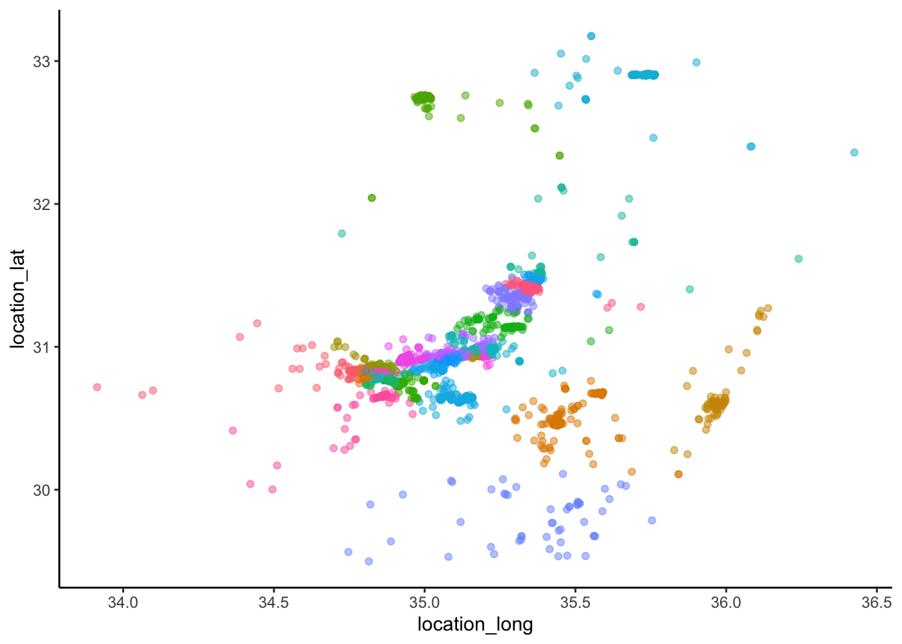
Okay, we could do k-means clustering with any arbitrary number and get some result. But I’m not sure how meaningful that is.
Try hierarchical clustering
?distm # default unit here is meters, which is what we want!testDF <- years[[2]] %>% sf::st_as_sf(coords =c("location_long", "location_lat"), remove = F) %>% sf::st_set_crs("WGS84")# Compute pairwise distances between points# distanceMatrix <- sf::st_distance(testDF, testDF) %>% as.dist() # this takes a really really long time with such a big dataset.# save(distanceMatrix, file = "data/distanceMatrix.Rda")load("data/distanceMatrix.Rda")
# Cut the dendrogram into different numbers of clustersnumberCuts <-as.data.frame(cutree(clust, k =c(30, 40, 50, 60)))names(numberCuts) <-paste0("k_", names(numberCuts))# Alternatively, cut the dendrogram based on different distancesdistanceCuts <-as.data.frame(cutree(clust, h =c(250, 500, 1000, 2000)))names(distanceCuts) <-paste0("dist_", names(distanceCuts))# Create a data frametestDF_withClusters <-bind_cols(testDF, numberCuts, distanceCuts)
Make plots–numbers
plots_numbers <-map(names(testDF_withClusters)[grepl("k_", names(testDF_withClusters))], ~{ n <-str_extract(.x, "[0-9]+") testDF_withClusters %>%ggplot(aes(x = location_long, y = location_lat, col =as.factor(.data[[.x]])))+geom_point(alpha =0.3)+theme_classic()+theme(legend.position ="none")+coord_equal()+ggtitle(paste0("Number of clusters = ", n))})walk(plots_numbers, print)
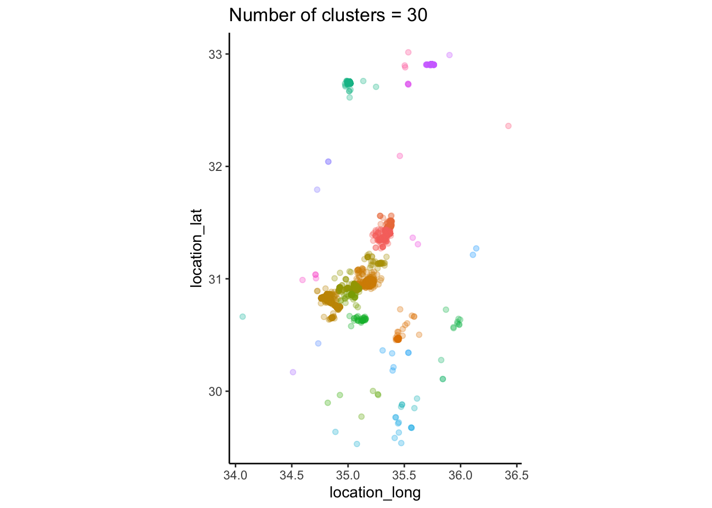
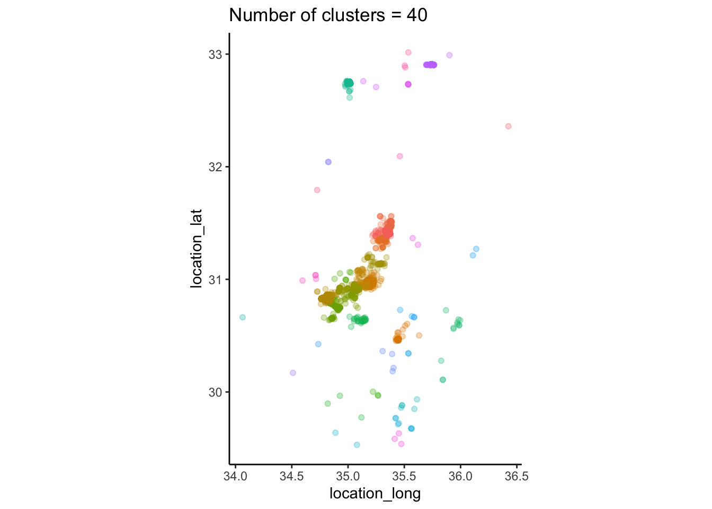
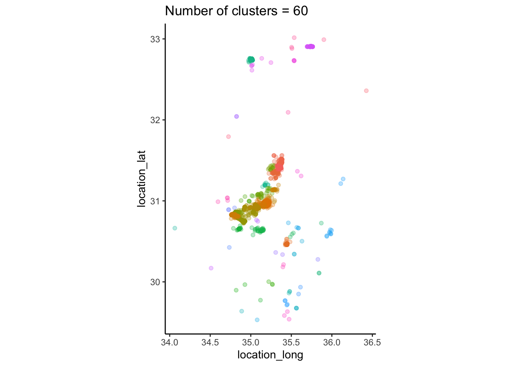
Make plots–distances
plots_distances <-map(names(testDF_withClusters)[grepl("dist_", names(testDF_withClusters))], ~{ testDF_withClusters %>%ggplot(aes(x = location_long, y = location_lat, col =as.factor(.data[[.x]])))+geom_point(alpha =0.3)+theme_classic()+theme(legend.position ="none")+coord_equal()})walk(plots_distances, print)
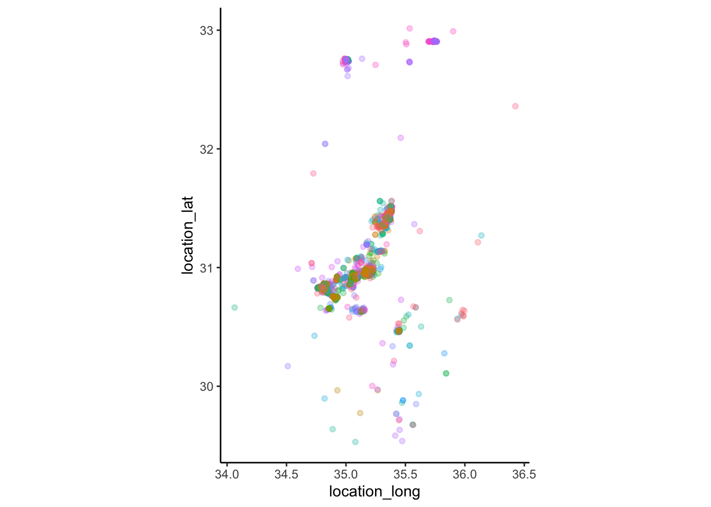
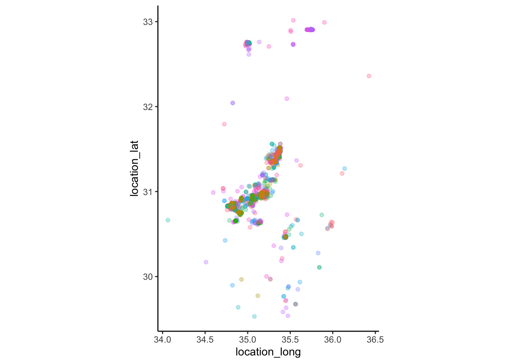
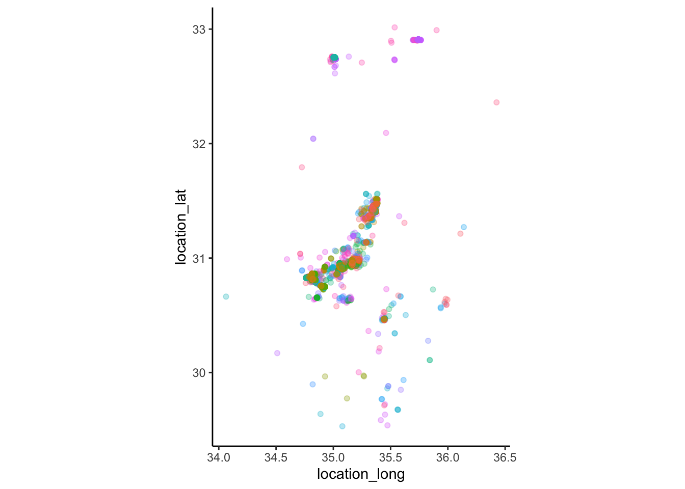
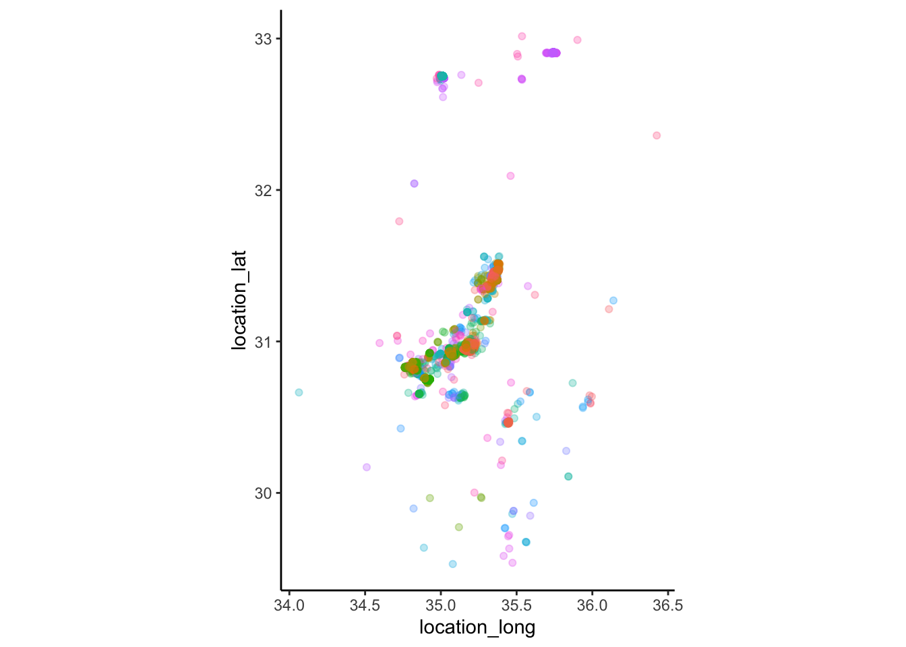
Ok, if we cut the tree based on distances, what does the number of clusters look like?
# number of clustersdists <-seq(100, 2000, by =100)testDistanceCuts <-as.data.frame(cutree(clust, h = dists))nClusters <-map_dbl(testDistanceCuts, max)plot(nClusters~dists, type ="l")
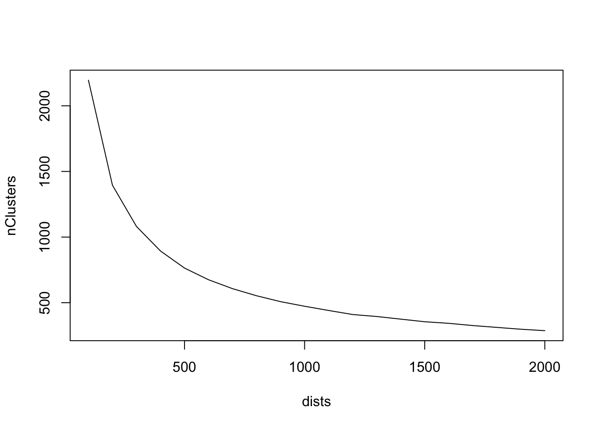
# This is not particularly helpful for selecting the distance. I suppose we could look at the elbow, which is a bit lower than 500m. 1000m seems like a potentially relevant distance, though, so I'm going to go with that for now, I guess? Note that even at a distance of 1000, we still get about 500 unique roosts.
Continuing with a 1000m (1km) distance for roosts
Zoom in on just the center of the map and visualize the different numbers
zoomData <- testDF_withClusters %>%filter(location_lat <31.8, location_lat >30.5, location_long <35.4, location_long >34.6)plots_numbers_zoom <-map(names(zoomData)[grepl("k_", names(zoomData))], ~{ n <-str_extract(.x, "[0-9]+") zoomData %>%ggplot(aes(x = location_long, y = location_lat, col =as.factor(.data[[.x]])))+geom_point(alpha =0.3)+theme_classic()+theme(legend.position ="none")+coord_equal()+ggtitle(paste0("Number of clusters = ", n))})walk(plots_numbers_zoom, print)
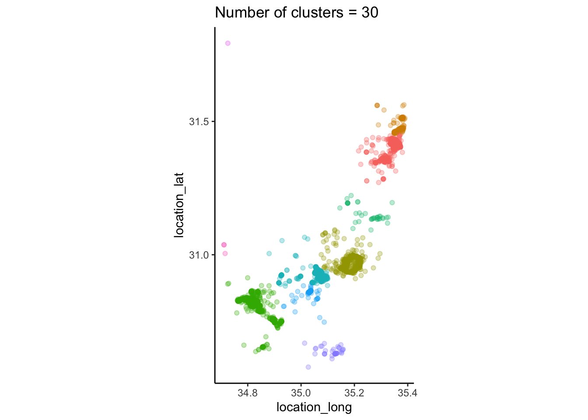
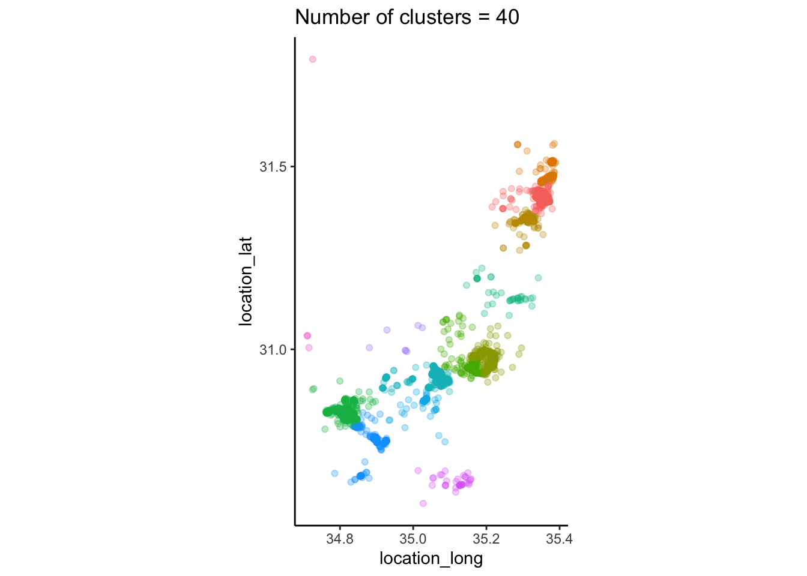
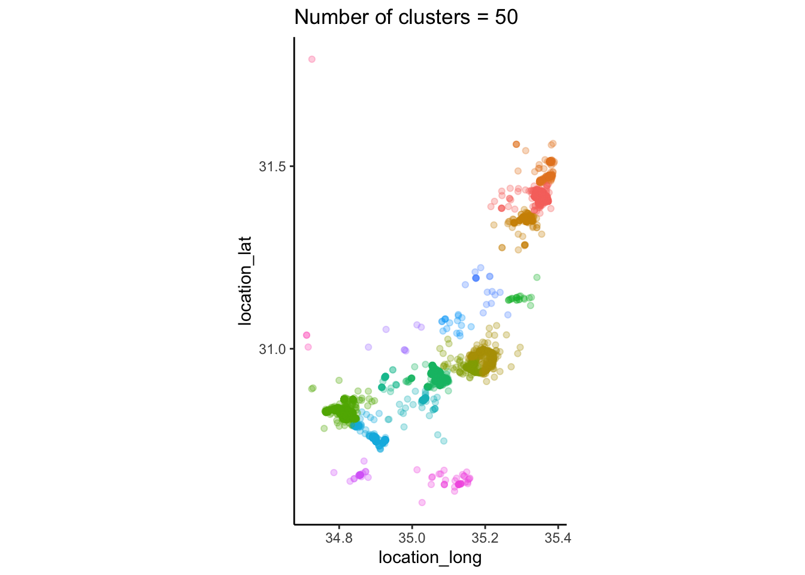
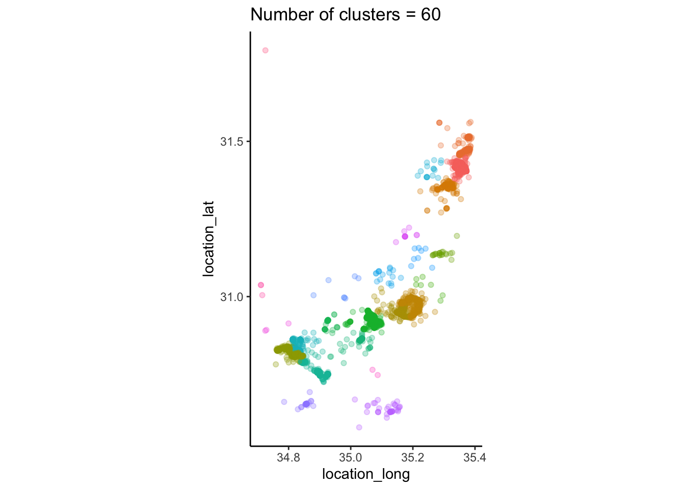
DBSCAN clustering
I think DBSCAN will be a good clustering algorithm here because it can identify weird-shaped clusters, and because the parameters that need tuning can be biologically informed. It will also tell us which points are outliers, and we can then do whatever we want with outliers (e.g. assign them to their own roosts)
set.seed(3)# eps is the reachability distance. I'm going to consider that to be 750m for starters. minPts for a core point is going to be 3.dbscan <-dbscan(distanceMatrix, eps =750, method ="dist", MinPts =3)data_dbscan <-bind_cols(testDF, "cluster"= dbscan$cluster) %>%mutate(isOutlier =case_when(cluster ==0~ T,TRUE~ F))# plotdata_dbscan %>%ggplot(aes(x = location_long, y = location_lat, col =factor(cluster)))+geom_point(alpha =0.3, aes(shape = isOutlier))+scale_shape_manual(values =c(19, 3))+theme_classic()+theme(legend.position ="none")+coord_equal()